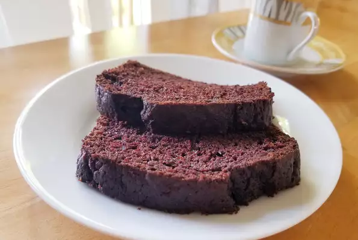

Chocolate Zucchini Bread

Delicious Homemade Bread For Kids
A moinst scrumptious bread with chocolate and spices that even kids will love. it's a great way to use up all of those extra zucchinis in your garden!
Ingredients
- 2 (1 ounce) squares unsweetened chocolate
- 3 eggs
- 2 cups white sugar
- 1 cup vegetable oil
- 2 cups grated zucchini
- 1 teaspoon vanilla extract
- 2 cups all-purpose flour
- 1 teaspoon baking soda
- 1 teaspoon salt
- 1 teaspoon ground cinnamon
- 3/4 cup semisweet chocolatechips
Steps
- Preheat oven to 350 degrees F (175 degrees C). Lightly grease two 9x5 inch loaf pans. In a microwave-safe bowl, microwave chocolate until melted. Stir occasionally until chocolate is smooth.
- In a large bowl, combine eggs, sugar, oil, grated zucchini, vanilla and chocolate; beat well. Stir in the flour baking soda, salt and cinnamon. Fold in the chocolate chips. Pour batter into prepared loaf pans.
- Bake in preheated oven for 60 to 70 minutes, or until a toothpick inserted into the center of a loaf comes out clean.
Return to main page